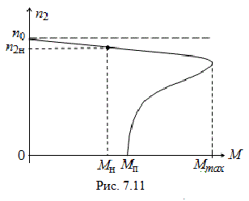

7.3.3. Механическая характеристика двигателя
Наибольшее значение для оценки свойств АД имеет механическая характеристика, представляющая собой графическую зависимость частоты вращения ротора n2 от вращающего момента M, т. е. n2 = ƒ(M). При выборе двигателя к производственному механизму из множества двигателей с различными характеристиками выбирают тот, механическая характеристика которого удовлетворяет требованиям механизма (см. тему 10).

Механическую характеристику n2 = ƒ(M) получают посредством преобразования зависимости M = ƒ(S), график которой представлен на рис. 7.10. Задаваясь значениями скольжения S и пользуясь формулой:
Механическую характеристику n2 = ƒ(M) получают посредством преобразования зависимости M = ƒ(S), график которой представлен на рис. 7.10. Задаваясь значениями скольжения S и пользуясь формулой:
n2 = n1(1 – S) = 60ƒ1(1 – S)/p,
при известных параметрах двигателя можно определить момент М и построить искомую механическую характеристику (рис. 7.11). Двигатель развивает максимальный вращающий момент при частоте n2 ≈ (0,8...0,9)n1; при частоте вращения n2 = n1 момент равен нулю, а при n2 = 0 пусковой момент Мп = (0,3...0,7)Мmax.